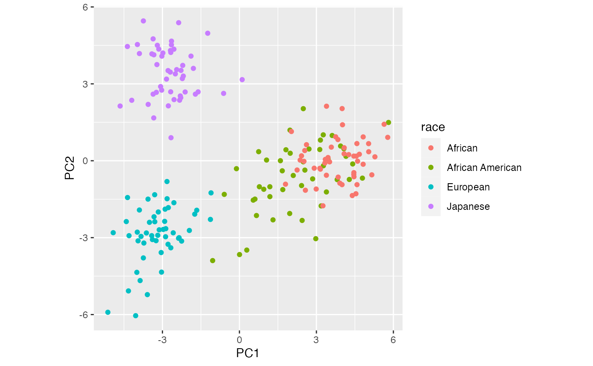
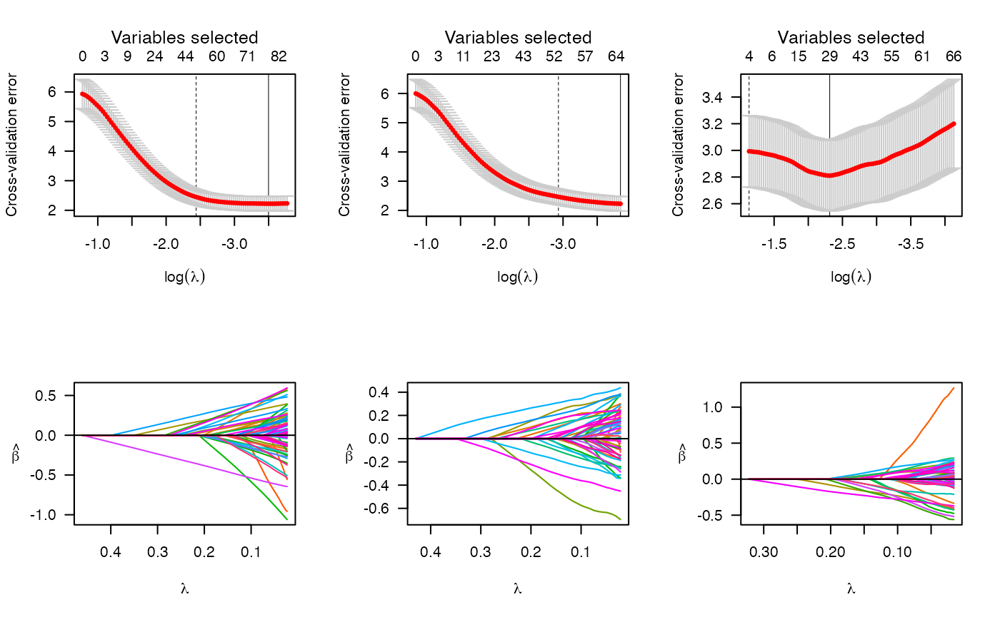

Inference with marginal false discovery rates
mfdr.Rmd
library(penalizedLMM)
library(data.table) # for fread()
library(ggplot2)
library(dplyr) # for mutate() and bind_rows()
#>
#> Attaching package: 'dplyr'
#> The following objects are masked from 'package:data.table':
#>
#> between, first, last
#> The following objects are masked from 'package:stats':
#>
#> filter, lag
#> The following objects are masked from 'package:base':
#>
#> intersect, setdiff, setequal, union
library(tibble) # for rownames_to_column() and other data cleaning funs.
library(knitr)Background and motivation
While cross validation (as in cv.plmm()) serves as a
method for assessing a model’s ability to predict outcomes in new data,
cross validation is not geared towards making inferences about
the \(\hat \beta\) values
(coefficients) estimated by a model. When we use a PLMM, we often want
to answer questions like:
“How reliable are the selections made by the model I chose?”
“How accurate are the estimated \(\hat \beta\) values?”
One way to address these important questions is through marginal false discovery rates (mFdr). In the mFdr framework, I can estimate an mFdr value for each value of \(\lambda\) in a penalized regression model. This gives me another way to compare different models. Instead of just comparing the cross-validation error, I can also compare the number of probable false discoveries out of all the features chosen in each model.
For those interested in the statistical theory behind this method, I
recommend my advisor’s free
online lecture notes. In this article, I will use the
mfdr() function to illustrate how marginal false discovery
rates can be used to compare models fit with plmm() and
cv.plmm().
Examples
Admix data
Let’s begin with a simple example using our semi-simulated admix data. I will compare 3 models:
- fit 1: a model with all singular values and no fixed effects.
- fit 2: a model with only \(k\) singular values and no fixed effects.
- fit 3: a model with only \(k\) singular values and top 4 principal components as fixed effects.
For each fit, I will use cross validation to select the value of \(\lambda\) that is best for prediction.
fit 1
# construct a cross-validated lasso model
cv_fit1 <- cv.plmm(X = admix$X,
y = admix$y,
penalty = "lasso",
# remember to set a seed for reproducibility
seed = 26)
# look at results
fit1 <- cv_fit1$fit
summary(cv_fit1)
#> lasso-penalized model with n=197and p=100
#> At minimum cross-validation error (lambda=0.0302):
#> -------------------------------------------------
#> Nonzero coefficients: 77
#> Cross-validation error (deviance): 2.22
#> Scale estimate (sigma): 1.491
# Calculate mFdr
# head(mfdr(fit1))
mfdr1 <- mfdr(fit1)[cv_fit1$min,]fit 2
# choose k
admix$k <- choose_k(X = admix$X, returnKapprox = T)
#>
#> Starting k value is 19
#> Step size is 19
#> Calcuating the relatedness matrix
#> Stepping up to next k value: k = 38
#> Stepping up to next k value: k = 57
#> Stepping up to next k value: k = 76
#> K approximation within specified epsilon reached at k = 76
# construct the model
cv_fit2 <- cv.plmm(X = admix$X,
y = admix$y,
K = admix$k$K_svd,
penalty = "lasso",
seed = 26)
#> Warning in set.seed(seed): '.Random.seed' is not an integer vector but of type
#> 'NULL', so ignored
# look at results
fit2 <- cv_fit2$fit
summary(cv_fit2)
#> lasso-penalized model with n=197and p=100
#> At minimum cross-validation error (lambda=0.0215):
#> -------------------------------------------------
#> Nonzero coefficients: 64
#> Cross-validation error (deviance): 2.23
#> Scale estimate (sigma): 1.492
# Calculate mFdr
# head(mfdr(fit2))
mfdr2 <- mfdr(fit2)[cv_fit2$min,]fit 3
# standardize design matrix and remove constant features
std_X <- ncvreg::std(admix$X)
# calculate PCs from *standardized* data
pca <- prcomp(std_X, center = F, scale = F)
# plot the top 10 PCs in a scree plot
plot(x = 1:10,
y = 100 * proportions(pca$sdev[1:10]^2),
type = 'b',
ylab = 'Proportion of variance explained',
xlab = 'PC',
main = 'Scree Plot')
# first 4 PCs explain most of the variance, so we will use these as fixed effects; this makes sense given the ancestry of the participants
pca_dat <- data.frame(race = admix$race, PC1 = pca$x[,1], PC2 = pca$x[, 2])
pca_plot <- ggplot(pca_dat, aes(x = PC1, y = PC2, col = race)) +
geom_point() +
coord_fixed()
plot(pca_plot)
PCs <- pca$x
# look at the PCs
# pca$x[1:5, 1:4]
# incorporate 4 PCs as fixed effects
admix$X_plus_PCs <- cbind(PCs[,1:4], admix$X)With the principal components calculated, we can now fit our third model:
# choose k using new design matrix
admix$k_plus_PCs <- choose_k(X = admix$X_plus_PCs, returnKapprox = T)
#>
#> Starting k value is 19
#> Step size is 19
#> Calcuating the relatedness matrix
#> Stepping up to next k value: k = 38
#> Stepping up to next k value: k = 57
#> Stepping up to next k value: k = 76
#> K approximation within specified epsilon reached at k = 76
# construct the model
cv_fit3 <- cv.plmm(X = admix$X_plus_PCs,
y = admix$y,
K = admix$k_plus_PCs$K_svd,
penalty = "lasso",
# make sure not to penalize fixed effects - we want to keep
# these in the model!
penalty.factor = c(rep(0, 4), rep(1, ncol(admix$X))),
seed = 26)
#> Warning in set.seed(seed): '.Random.seed' is not an integer vector but of type
#> 'NULL', so ignored
# look at results
fit3 <- cv_fit3$fit
summary(cv_fit3)
#> lasso-penalized model with n=197and p=104
#> At minimum cross-validation error (lambda=0.0989):
#> -------------------------------------------------
#> Nonzero coefficients: 29
#> Cross-validation error (deviance): 2.81
#> Scale estimate (sigma): 1.676
# Calculate mFdr
# head(mfdr(fit3))
mfdr3 <- mfdr(fit3)[cv_fit3$min,]Comparisons
Let’s compare the results from these three models using the admix data:
# columns are ordered by models 1-3
# rows are CV plots & coefficient path plots
par(mfrow = c(2,3))
plot(cv_fit1); plot(cv_fit2); plot(cv_fit3)
plot(fit1); plot(fit2); plot(fit3)
admix_comparison <- dplyr::bind_rows(mfdr1, mfdr2, mfdr3) |>
rownames_to_column(var = "lambda") |>
mutate(across(.cols = c(EF, mFDR),
.fns = ~round(.x, digits = 3)))
kable(admix_comparison)| lambda | EF | S | mFDR |
|---|---|---|---|
| 0.0302 | 12.128 | 76 | 0.160 |
| 0.0215 | 2.512 | 63 | 0.040 |
| 0.0989 | 0.055 | 24 | 0.002 |
Some observations based on the plots and output above:
- The CV plot has the clearest pattern for fit 3
- Fits 2 and 3 have comparable marginal false discovery rates of about 4%, which is much lower (better) than the 16% mFdr for fit 1.
- The number of selected variables is higher for the second fit. Question: could this mean that adding the PCs is decreasing power? I am still thinking about this…
Marginal false discovery rates also give us another way to select \(\lambda\): instead of choosing the \(\lambda\) value that minimizes cross validation error, I could choose the value that limits the mFdr at a certain level. We can examine this approach for the models we fit above:
# let's look at the smallest lambda for which mFdr is < 10% in each fit
# TODO: I am still working to 'iron this out'
# fit 1
bestlam1 <- fit1$lambda[mfdr1$mFDR < 0.1] |> min() |> round(5)
mfdr1_res <- mfdr1[as.character(bestlam1),]
# fit 2
bestlam2 <- fit2$lambda[mfdr2$mFDR < 0.2] |> min() |> round(5)
mfdr2_res <- mfdr2[as.character(bestlam2),]
# fit 3
bestlam3 <- fit3$lambda[mfdr3$mFDR < 0.3] |> min() |> round(5)
mfdr3_res <- mfdr3[as.character(bestlam3),]Penncath data (high dimensional)
Let’s do a similar model comparison, this time using the
penncath_lite data.
# process PLINK files with penncath data
# NB: you only need to do this step the first time you process the raw data.
penncath_lite <- process_plink(
data_dir = plink_example(parent = TRUE),
prefix = "penncath_lite",
gz = TRUE, # NB: PLINK data that ships with package comes gzipped
impute = TRUE, # mode imputation is default
outfile = "process_penncath")
# read in the processed penncath data
pen <- get_data(path = paste0(plink_example(parent = TRUE), "/penncath_lite"),
returnX = TRUE)These data represent 1,401 individuals and 4,367 SNPs from a GWAS study. For the sake of example, let’s use hdl (high-density lipoprotein cholesterol) as our outcome.
# read in the clinical data
pen_clinical <- fread(paste0(plink_example(parent = TRUE),
"/penncath_clinical.csv")) |>
rename(family.ID = FamID) |>
mutate(sex = NULL)
# several choices of outcome here;
glimpse(pen_clinical)
# choose hdl as outcome; impute missing values with the mean
pen$fam <- full_join(pen$fam, pen_clinical, by = join_by("family.ID"))
pen$y <- ifelse(is.na(pen$fam$hdl), mean(pen$fam$hdl, na.rm = T), pen$fam$hdl)fit 1
# construct a cross-validated lasso model
cv_pen1 <- cv.plmm(X = pen$X,
y = pen$y,
penalty = "lasso",
# remember to set a seed for reproducibility
seed = 26)
# look at results
pen1 <- cv_pen1$fit
summary(cv_pen1)
# Calculate mFdr
# head(mfdr(pen1))
(pen_mfdr1 <- mfdr(pen1)[cv_pen1$min,])Hmm – we found an mFdr of 1 in fit 1, which is not great from an application standpoint. While this could be due to a true lack of association between any SNPs and the HDL outcome, this may also be an estimation issue. In our next model, we will use MCP instead of lasso in hopes of improving our estimation.
fit 3
Finally, we will model the ‘penncath’ data one more time using sex, age, and the first few principal components
pen$std_X <- ncvreg::std(pen$X)
pen_pca <- prcomp(pen$std_X, center = F, scale. = F)
# scree plot
plot(x = 1:10,
y = 100 * proportions(pen_pca$sdev[1:10]^2),
type = 'b',
ylab = 'Proportion of variance explained',
xlab = 'PC',
main = 'Scree Plot')
# will use 10 PCs as fixed effects
pen_PCs <- pen_pca$x
pen$X_plus_fixed_eff <- cbind(pen$fam[,c("age", "sex")], pen_PCs[,1:10], pen$X)
# TODO: the following line needs troubleshooting
# pen$k_plus_pcs <- choose_k(X = pen$X_plus_fixed_eff,
# # start at 1200 based on result from the previous fit
# start = 1200,
# returnKapprox = T)
cv_pen3 <- cv.plmm(X = pen$X_plus_fixed_eff,
y = pen$y,
# start at 1200 based on result from the previous fit
k = 1200,
penalty.factor = c(rep(0,12), rep(1,ncol(pen$X))),
seed = 26)
pen3 <- cv_pen3$fit
summary(cv_pen3)
(pen_mfdr3 <- mfdr(pen3)[cv_pen3$min,])Comparisons
Comparing the three fits with the ‘penncath’ data, we can observe the following:
par(mfrow = c(2,3))
plot(cv_pen1); plot(cv_pen2); plot(cv_pen3)
plot(pen1); plot(pen2); plot(pen3)
pen_comparison <- dplyr::bind_rows(pen_mfdr1, pen_mfdr2, pen_mfdr3) |>
rownames_to_column(var = "lambda") |>
mutate(across(.cols = c(EF, mFDR),
.fns = ~round(.x, digits = 3)))
kable(pen_comparison)We can also look at how mFDR changes among the three models:
compare_mfdr <- bind_rows(mfdr(pen1), mfdr(pen2), mfdr(pen3)) |>
rownames_to_column(var = "lambda") |>
mutate(model = c(rep("lasso", 100),
rep("MCP + trunc. SVD", 100),
rep('MCP + trunc. SVD + fixed eff', 100)),
log_lam = log(as.numeric(lambda)))
ggplot(compare_mfdr,
aes(x = log_lam, y = mFDR)) +
geom_line(aes(colour = model)) +
labs(x = expression(log(lambda)))Local false discovery rates
At the beginning of this vignette, we examined some important questions of inference. Let’s consider an additional question that often arises in practice: “Can we assess which of the features (e.g., which SNPs, or which predictors) are most likely to be false discoveries, and which features are most likely to be truly connected to the outcome I care about?”. This is a question about the individual features, rather than about a model. One way to address this question is with local marginal false discovery rates (lmfdr). The local mFdr framework takes mFdr to the feature level, so that an mFdr value is estimated for each \(\hat \beta\) in a penalized regression model. Using these mFdr values, I can then rank the selected features on a scale from 0 to 1. A feature with an mFdr value closer to zero has a high probability of being associated with the outcome of interest, whereas a feature with an mFdr value closer to 1 is probably a false discovery.
Example to come here… in the future, I want to adapt
ncvreg:::local_mfdr() to work with PLMMs.
References & acknowledgements
The mfdr() function I have incorporated here in our
penalizedLMM package is based on Ryan Miller’s joint work
with Patrick Breheny in the ncvreg::mfdr() package. To read
more about their work, see Miller & Breheny (2023) in
Stats in Medicine.
Penncath data: These data describe coronary artery disease outcomes from the PennCath study). This data set is a subset of a much larger data set (the original data has over 800K SNPs); I chose to create a ‘lite’ version for vignette purposes. For for information on this data set, refer to the original publication.